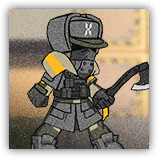
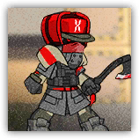

|
 |
游击队的普通战士。收到战术命令后状态会得到提升，还会使用全力冲锋的战术。 |
| AC 15 | 先攻 +3（13） |
| HP 32（5d8+10） | |
| 速度 30 尺 | |
| 调整 | 豁免 | 调整 | 豁免 | 调整 | 豁免 | |||||||||
|---|---|---|---|---|---|---|---|---|---|---|---|---|---|---|
| 力量 | 16 | +3 | +3 | 敏捷 | 16 | +3 | +5 | 体质 | 14 | +2 | +4 | |||
| 智力 | 9 | -1 | -1 | 感知 | 12 | +1 | +1 | 魅力 | 12 | +1 | +1 |
| 技能 运动+5，察觉+3 |
| 抗性 寒冷 |
| 装备 战斧，镶钉皮甲 |
| 感官 黑暗视觉60尺，被动察觉13 |
| 语言 通用语，乌萨斯语 |
| CR 2（XP 450；PB +2） |
|
 |
游击队的高级战士。收到战术命令后状态会得到提升，还会使用全力冲锋的战术。 |
| AC 15 | 先攻 +3（13） |
| HP 60（8d8+24） | |
| 速度 30 尺 | |
| 调整 | 豁免 | 调整 | 豁免 | 调整 | 豁免 | |||||||||
|---|---|---|---|---|---|---|---|---|---|---|---|---|---|---|
| 力量 | 16 | +3 | +3 | 敏捷 | 16 | +3 | +5 | 体质 | 16 | +3 | +5 | |||
| 智力 | 12 | +1 | +1 | 感知 | 12 | +1 | +1 | 魅力 | 12 | +1 | +1 |
| 技能 运动+5，察觉+3 |
| 抗性 寒冷 |
| 装备 战斧，镶钉皮甲 |
| 感官 黑暗视觉60尺，被动察觉13 |
| 语言 通用语，乌萨斯语 |
| CR 3（XP 700；PB +2） |